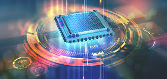

RISC SISC
CISC e RISC são paradigmas de projeto de CPU e, por extensão, de todo o computador.
- FOCO NO SOFTWARE.
- É o paradigma inicial.
- Objetivo de facilitar a tarefa do desenvolvedor de compiladores ao oferecer suporte para linguagens de alto nível cada vez mais complexas.
- Uma vantagem, os programas tendem a ocupar menos espaço em memória.
- Com a evolução das linguagens de alto nível, os processadores foram incorporando cada vez mais recursos e tornando-se cada vez mais complexos:
- Muitos modos de endereçamento;
- Muitos formatos de instrução e instruções com mais endereços;
- Em geral usa mais a memória para armazenamento de dados;
- Uso de microprogramação (microcódigos).
- Uso de microcódigos na implementação da unidade de controle para melhor aproveitamento da pipeline.
- FOCO NO HARDWARE.
- Início da década de 1980.
- Objetivo de criar um hardware mais otimizado.
- Iniciativas independentes que acabaram assumindo características comuns.
- Grande número de registradores de propósito geral e/ou uso de um compilador que otimize o uso de registradores.
- Enfoque na otimização do uso da pipeline de instruções.
- Arquitetura Harvard.
- Conjunto de instruções simples, limitado e de formato fixo:
- Instruções com tempo de execução fixo (ao menos as que não envolvem desvio);
- Operações de registador para registrador;
- Modos de endereçamento simples (via registrador, indireto via registrador);
- Formatos de instrução simples e de tamanho fixo (normalmente de 1 endereço).
As arquiteturas atuais não são mais arquiteturas puramente RISC ou CISC. O que temos são basicamente arquiteturas RISC e CISC superescalares, o que implica em dizer que há algum grau de hibridismo entre elas.
Uma curiosidade final, com tantas adições à ISA IA-32 / Intel 64 (x86), em 2006, os microprocessadores Intel Core 2 Duo e Xeon já contavam com 554 instruções de máquina. E o número continua aumentando! Já vieram SSE4, AES, etc.


Computação em nuvem?
Os principais provedores globais de nuvem pública hoje, são a Amazon AWS, Microsoft Azure IBM e Google.

Nova Tecnologia
Utilizada pela Silicon Quantum Computing Pty Limited e deverão ser usadas para a criação e comercialização de computadores quânticos em larga escala.
O que é nanotecnologia?
Entendimento e controle da matéria em nanoescala. Ela atua no desenvolvimento de materiais e componentes para diversas áreas.